🔖原文信息（编者中文重排）
📚 文献信息
▪ Moramarco K, Borysov M. A Modern Historical Perspective of Schroth Scoliosis Rehabilitation and Corrective Bracing Techniques for Idiopathic Scoliosis. Open Orthop J. 2017;11(Suppl-9, M2):1452-1465.
▪ 作者来自美国 Scoliosis 3DC 诊所、乌克兰 Orttech-Plus 康复中心
▪ 专题通讯（历史综述）；DOI：10.2174/1874325001711011452
说到青少年特发性脊柱侧弯的运动康复，绕不开 Schroth 方法。它从 1921 年一位侧弯患者对着镜子研究自己的呼吸开始，经过祖孙三代人发展，又和法国 Chêneau 支具结合，形成了“运动 + 支具”的一整套体系。
这篇文章把这段历史串了起来，重点讲清楚三件事：Schroth 训练的核心要素是什么、Lehnert-Schroth 分型怎么看、Chêneau 类支具和美国的波士顿支具有什么不同。
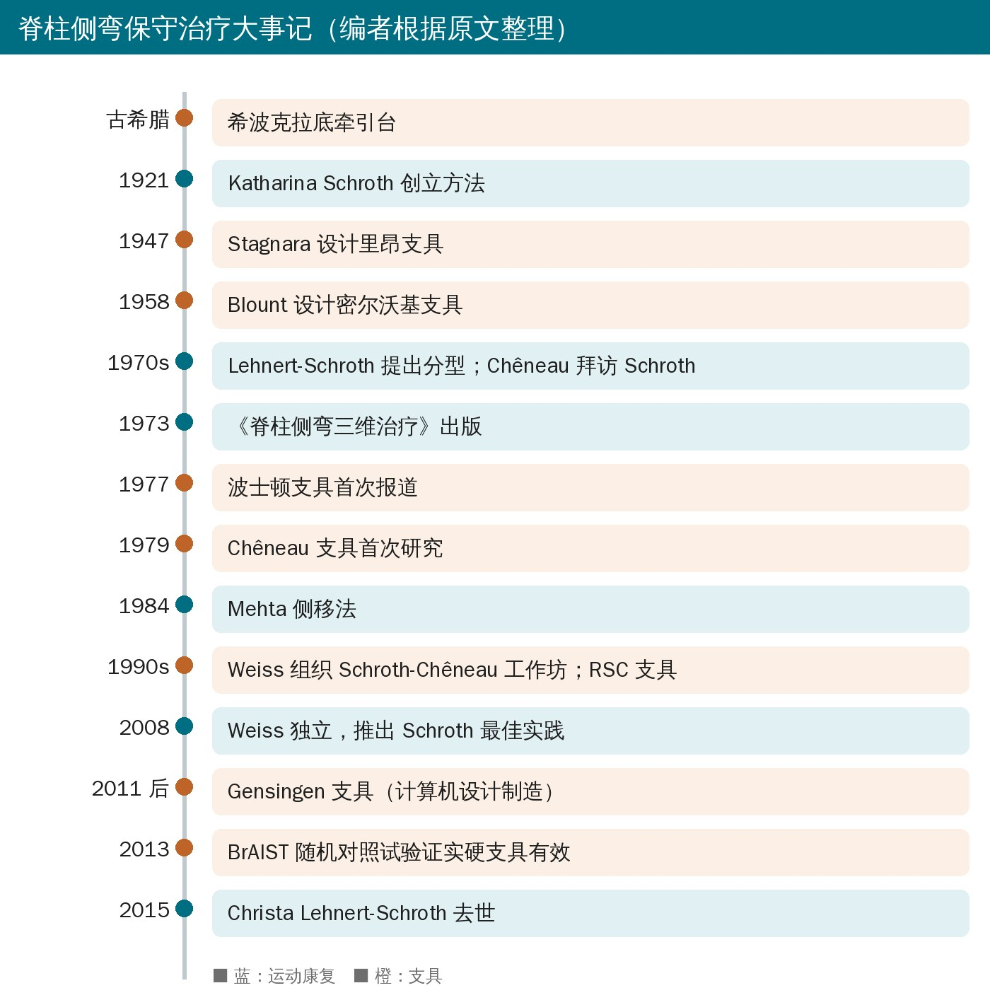
🔖大事记
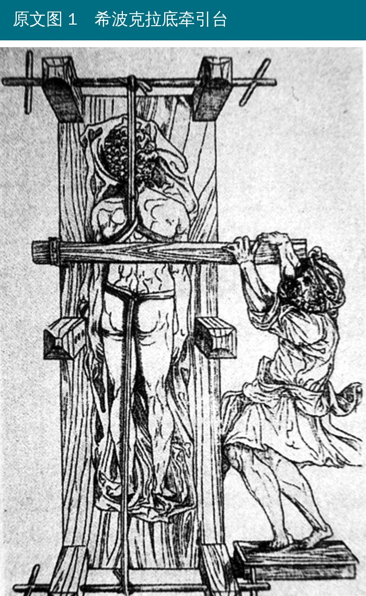
🔖原文图 1 希波克拉底牵引台
• 侧弯治疗最早可追溯到古希腊希波克拉底的牵引台；近代以支具为主，常规目标是“不再加重”
• 侧弯进展到 Cobb 角 40°～50° 以上，一般建议多节段融合手术；欧洲各国则发展出各自的侧弯专项运动“学派”
• 1921 年，自己就是侧弯患者的 Katharina Schroth 对着镜子观察：改变呼吸方式，躯干形态会跟着变。由此发明了旋转成角呼吸
• 女儿 Christa Lehnert-Schroth（物理治疗师）继续发展：20 世纪 70 年代提出要重视腰骶部的第 4 个弯，并建立了沿用至今的分型；1973 年出版《脊柱侧弯三维治疗》
• 外孙 Hans-Rudolf Weiss 医生在 2008 年后推出“Schroth 最佳实践”版本，并主导了 Gensingen 支具
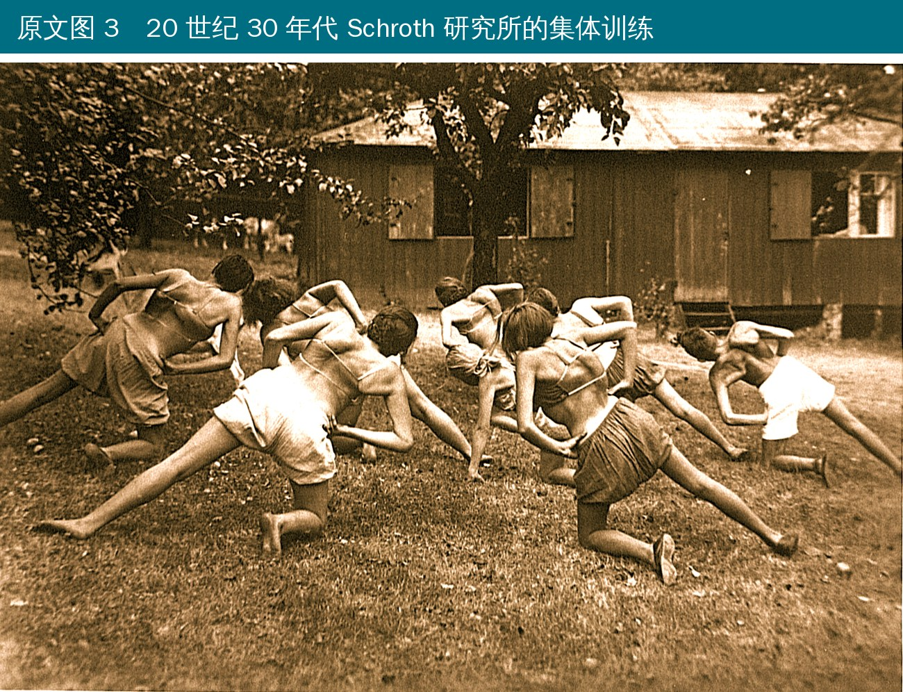
🔖原文图 3 20 世纪 30 年代的集体训练
🔖Schroth 方法的核心要素
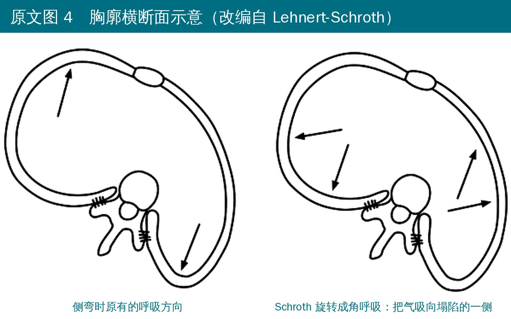
🔖原文图 4 旋转成角呼吸示意
• 旋转成角呼吸：有意识地把气吸进塌陷的一侧胸廓，配合躯干去旋转，让凹陷的地方“鼓起来”。这是 Schroth 最有标志性的技术
• 镜前监控：对着镜子练，边做边看，把矫正动作和身体感觉对应起来；今天的最佳实践版本仍在用
• 先分型、再训练：根据下面的 Lehnert-Schroth 分型判断主弯和代偿弯，动作因人而异，不是一套动作给所有人
• 矢状面矫正：最佳实践版本加入“生理性”训练，先把胸椎后凸、腰椎前凸调整到位
• 日常生活中的主动自我矫正：站、坐、拿东西时都保持按自己弯型设计的矫正姿势（见图 6）
• 短期集中教学：主张几天内教会，结束时患者能独立练习，不长期依赖治疗师
• 原则：矫正可以有“用力感”，但不应引起疼痛
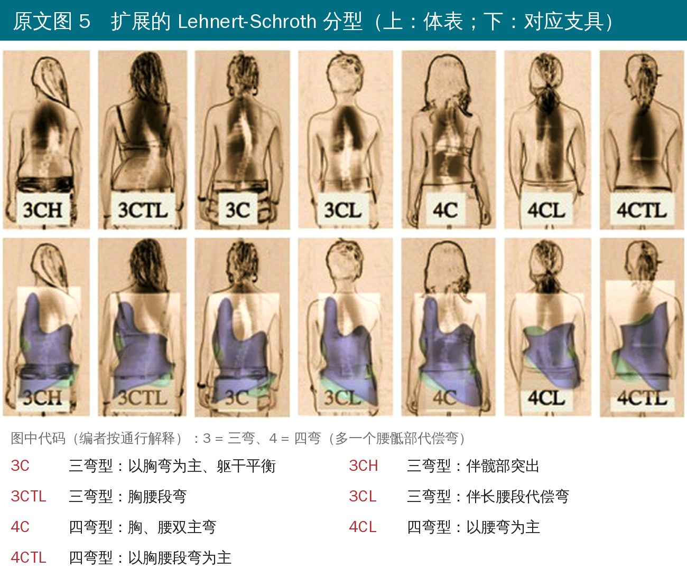
🔖原文图 5 扩展的 Lehnert-Schroth 分型
分型的思路很简单：三弯型（3）还是四弯型（4，多一个腰骶部代偿弯），再看主弯在胸段、胸腰段还是腰段，有没有髋部突出。图 5 上排是体表外观，下排是对应的支具设计——训练和支具用的是同一套分型。
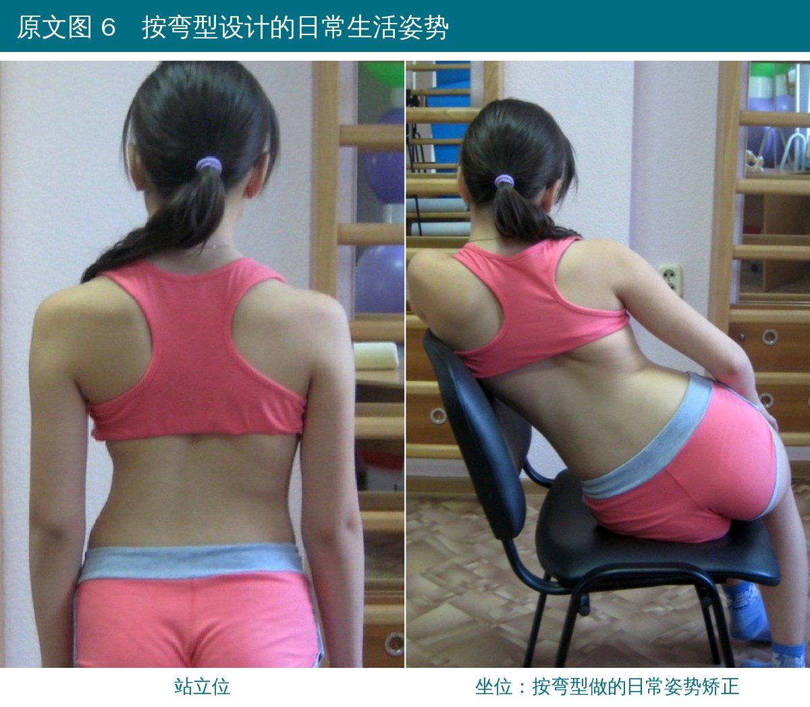
🔖原文图 6 按弯型设计的日常姿势
| 学派 | 来源 | 特点（原文描述） |
|---|---|---|
| 里昂法 | 法国 | 历史比 Schroth 更久，配套里昂支具 |
| SEAS | 意大利 | 源自里昂法，后来吸收了其他方法的原则 |
| Dobomed | 波兰，1979 | 诱导整体后凸，呼吸训练借鉴自 Schroth |
| 侧移法 | 英国 Mehta，1984 | 英国皇家国家骨科医院在用 |
| FITS | 波兰 | 个体化功能治疗，强调非对称矫正，融合多种技术 |
| 巴塞罗那学派 | 西班牙（Schroth 分支） | 采用新的命名体系，与原始 Schroth 原则有所偏离 |
| Schroth 最佳实践 | 德国 Weiss | 保留原始概念，加入矢状面矫正和日常生活矫正 |
瑜伽、普拉提用于侧弯目前缺乏证据；作者提醒，对躯干不对称的人，有些瑜伽动作是禁忌。
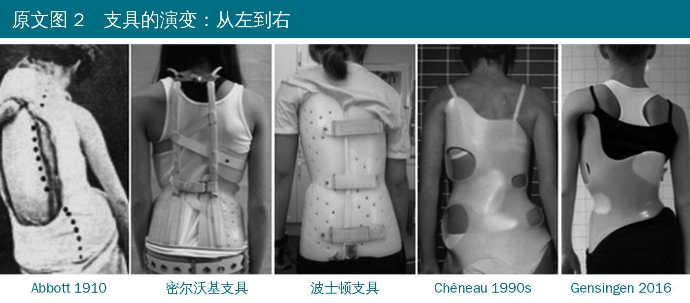
🔖原文图 2 支具的演变
| 支具 | 来源 | 特点 |
|---|---|---|
| 波士顿支具 | 美国，1977 | 最常用；对称硬支具，内衬压垫，后开口；BrAIST 试验证实有效 |
| 密尔沃基支具 | 美国，1958 | 带颈托，矫正效果一般，主要用于高位胸弯 |
| 里昂支具 | 法国，1947 | 第一款石膏取模的三维可调支具，强调躯干延伸 |
| 夜间支具 | 美国 | 普罗维登斯支具、查尔斯顿支具，仅夜间佩戴 |
| Chêneau 类支具 | 法国，1979 | 非对称设计，在凹侧留“空腔”方便做 Schroth 呼吸；前开口，患者自己能穿 |
| Gensingen 支具 | 德国 Weiss，2011 后 | Chêneau 改良版，计算机设计制造，更短更轻，尽量过度矫正 |
• 美国支具的目标是“防止进展、避免手术”；Chêneau 类支具的目标是“改善躯干对称、争取在停用支具时 Cobb 角有所减小”
• BrAIST 研究（2013）：硬支具组有 72% 避免了手术，佩戴时间越长效果越好；Nachemson 等的多中心研究中 70% 不再进展；Chêneau 支具 2005 年的研究为 80%
• 支具内初始矫正率很关键：Landauer 等发现，初始支具内矫正 ≥ 40%，依从性好的患者治疗结束时 Cobb 角能减少 7° 以上
• 影响结果的因素：脊柱柔韧性、开始佩戴时的角度、Risser 分级、每天佩戴时间
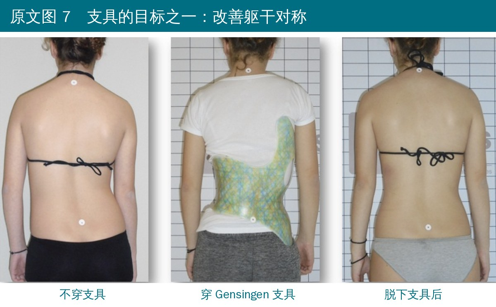
🔖原文图 7 改善躯干对称
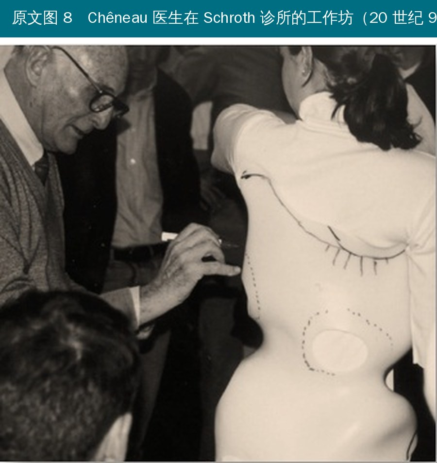
🔖原文图 8 Chêneau 医生的工作坊
Chêneau 医生 20 世纪 70 年代多次拜访 Schroth 母女，学习呼吸矫正原理，并采用了 Lehnert-Schroth 分型——在支具的凹侧开“空腔”，让患者在支具里也能做旋转成角呼吸。90 年代 Weiss 在 Schroth 诊所组织年度工作坊，把治疗师和支具师聚到一起。
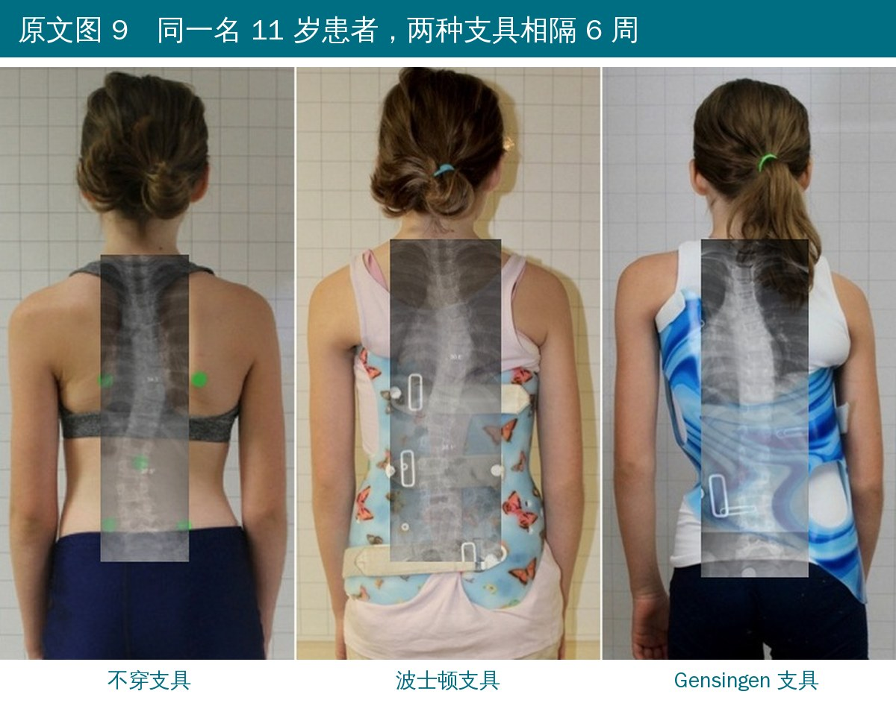
🔖原文图 9 波士顿支具 vs Gensingen 支具
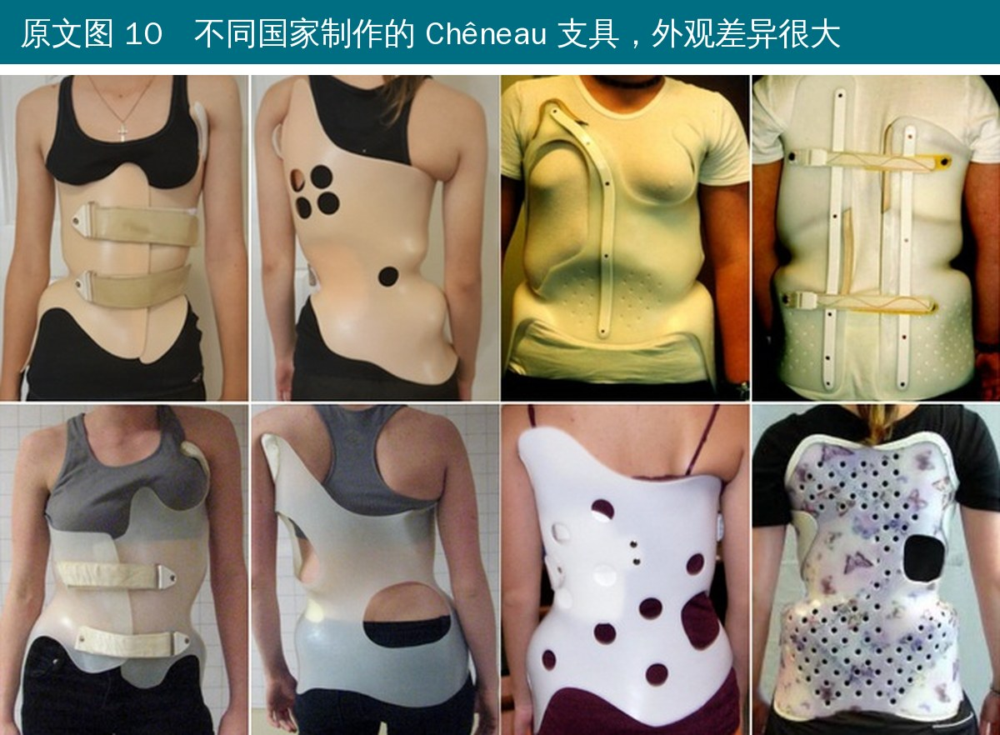
🔖原文图 10 不同国家制作的 Chêneau 支具
同样叫“Chêneau 支具”，不同支具师做出来差别很大，很多版本没有发表过效果数据。Gensingen 支具的做法是标准化：按 7 种基本弯型 + 2 种补充弯型（双胸弯、伴高位胸代偿弯的胸腰弯）建立支具模型库。
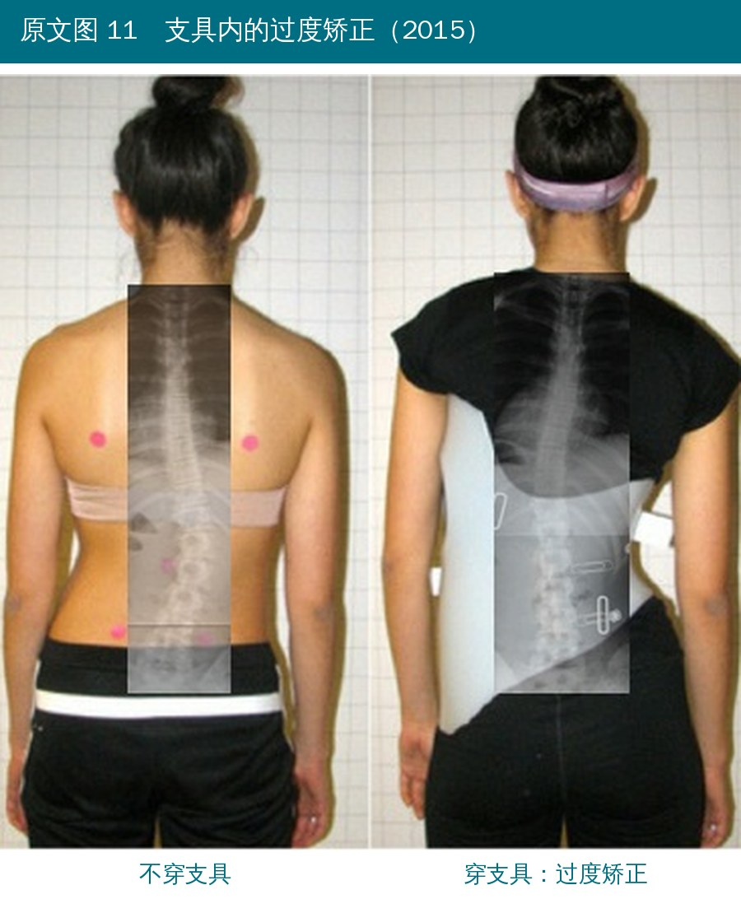
🔖原文图 11 支具内过度矫正
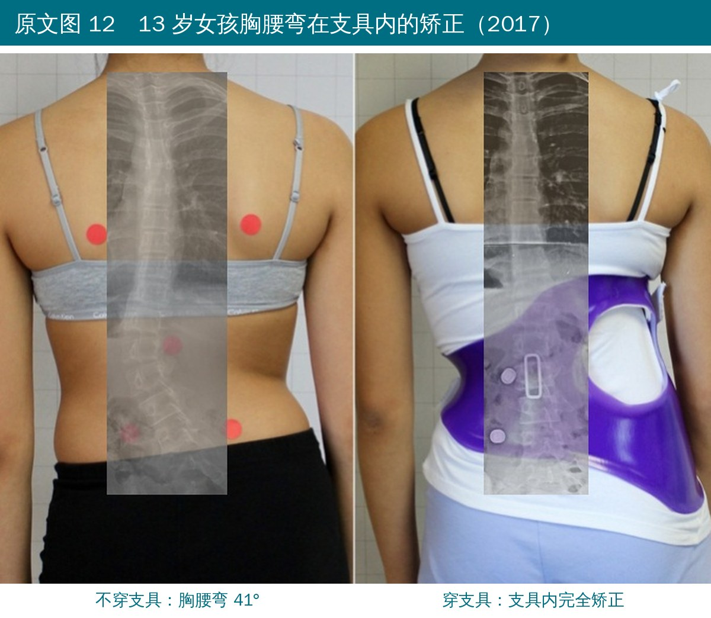
🔖原文图 12 支具内的胸腰弯矫正
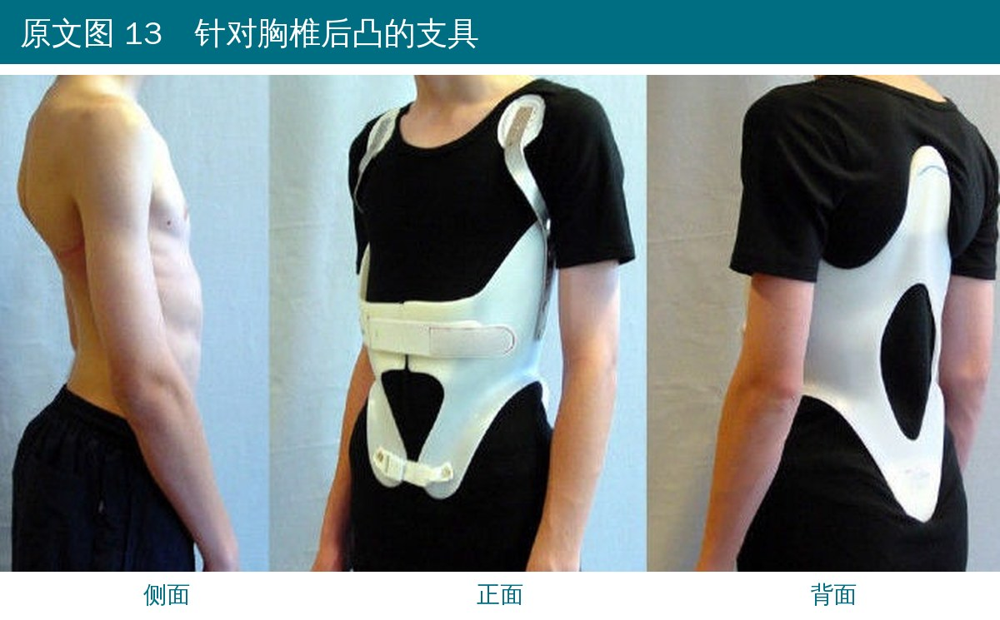
🔖原文图 13 针对胸椎后凸的支具
• 原始 Schroth 方案就包含骨盆矫正和压平胸椎后凸的练习，即使合并 60° 以上的侧弯也可以做
• 支具：密尔沃基支具、欧洲的 Gschwend 支具；Weiss 设计了按 Schroth 原则矫正的后凸支具，另有针对胸腰段后凸的支具，报道可减轻腰痛
• 这是一篇立场鲜明的历史通讯，不是系统综述：没有检索方法，也没有比较各学派的疗效
• 两位作者分别来自提供 Schroth 训练和 Gensingen 支具的机构，文中多处使用注册商标，但声明“无利益冲突”；关于最佳实践版本和 Gensingen 支具优越性的说法，主要引用 Weiss 团队自己的研究
• 图 11、图 12 展示的是个别病例的支具内即时矫正，不等于治疗结束后的长期效果
• BrAIST 的 72% 是支具组整体结果，原文写成“依从性好的患者中 72%”，表述不够准确
• 做侧弯运动康复，先分型、再选动作；Lehnert-Schroth 分型简单好用，也能和支具设计对上
• 旋转成角呼吸 + 镜前反馈 + 日常姿势中的自我矫正，是 Schroth 方法最可借鉴的三个要素
• 支具仍是青少年中重度侧弯最重要的保守治疗；选支具看初始支具内矫正率和患者能否坚持佩戴
• 不同学派、不同支具品牌的说法要看独立研究，不能只看推广方的资料
欢迎关注悦美力公众号，获取更多物理治疗的专业知识！
📄参考文献：
Moramarco K, Borysov M. A Modern Historical Perspective of Schroth Scoliosis Rehabilitation and Corrective Bracing Techniques for Idiopathic Scoliosis. Open Orthop J. 2017;11:1452-1465. doi:10.2174/1874325001711011452
原文以 CC BY 4.0 协议开放获取。本文为学术交流用的中文解读，图片引自原文图 1～13（编者加中文标注），时间线与要点卡为编者绘制，表格为编者整理翻译。原文图片来源包括 Weiss 医生、Scoliosis 3DC 及 Lehnert-Schroth 档案。